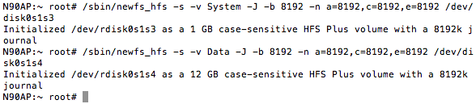
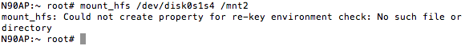
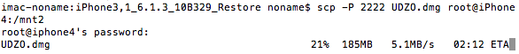
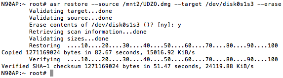
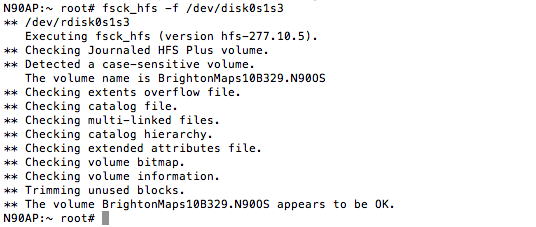

Restoring RootFS
In this part we'll create HFS+ volumes on newly created partitions and restore RootFS to one of themCreating filesystems
First of all, let's create mount points:mkdir /mnt1
mkdir /mnt2
/sbin/newfs_hfs -s -v System -J -b bsize -n a=bsize,c=bsize,e=bsize /dev/disk0s1s3
/sbin/newfs_hfs -s -v Data -J -b bsize -n a=bsize,c=bsize,e=bsize /dev/disk0s1s4
Where bsize is value of your device's blocksize, obviously

Mount second one:
mount_hfs /dev/disk0s1s4 /mnt2
Could not create property for re-key environment check message is OK, it appears even while native restores. So, no worries
Now send your RootFS image you prepared in Part 1 to /mnt2. You may use scp or send it through afc2

Restoring
After it run ASR:asr restore --source /mnt2/UDZO.dmg --target /dev/disk0s1s3 --erase
Validating source will take a while, no worries
After it succeeds you may run fsck_hfs just for sure:
fsck_hfs -f /dev/disk0s1s3
That's all, RootFS image is restored